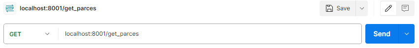

Лабораторная работа 3: Упаковка FastAPI приложения в Docker, Работа с источниками данных и Очереди
Цель
Научиться упаковывать FastAPI приложение в Docker, интегрировать парсер данных с базой данных и вызывать парсер через API и очередь.
Ход работы
В данной лабораторной работе было упаковано в контейнеры два приложения:
- travel_app - первая лабораторная работа
- docker_2 - по сути вторая лабораторная работа
Dockerfile для travel_app:
FROM python:3.9.19-alpine3.20
WORKDIR .
COPY . .
RUN pip3 install -r requirements.txt
CMD uvicorn main:app --host localhost --port 8000
docker-compose.yaml:
version: "3.9"
services:
lab_3_bd:
container_name: lab_3_bd
image: postgres
restart: always
environment:
- POSTGRES_PASSWORD=1122
- POSTGRES_USER=postgres
- POSTGRES_DB=web_data
- POSTGRES_PORT=5432
volumes:
- postgres_data:/var/lib/postgresql/data/
ports:
- "5432:5432"
networks:
- backend
travel_app:
container_name: travel_app
build:
context: .
env_file: .env
depends_on:
- lab_3_bd
ports:
- "8000:8000"
command: uvicorn main:app --host 0.0.0.0 --port 8000
networks:
- backend
restart: always
docker_2:
container_name: docker_2
build:
context: ./docker_2
env_file: .env
depends_on:
- lab_3_bd
ports:
- "8001:8001"
command: uvicorn main:app --host 0.0.0.0 --port 8001
networks:
- backend
restart: always
celery:
build:
context: .
container_name: celery
command: celery -A celery_app worker --loglevel=info
restart: always
depends_on:
- redis
- lab_3_bd
networks:
- backend
redis:
image: redis
ports:
- "6379:6379"
networks:
- backend
volumes:
postgres_data:
networks:
backend:
driver: bridge
Также я использовал celery:
celery_app.py:
from celery import Celery
celery_app = Celery(
"cel_app",
broker="redis://redis:6379/0",
backend="redis://redis:6379/0",
)
celery_app.conf.update(
task_routes={
"parse.parse_and_save": "main-queue",
},
)
if __name__ == "__main__":
celery_app.start()
Используется он следующим образом:
@celery_app.task
def parse_and_save(url, session):
response = requests.get(url)
soup = BeautifulSoup(response.content, 'html.parser')
title = soup.title.string if soup.title else 'No title'
try_obj = Try(url=url, title=title)
session.add(try_obj)
session.commit()
session.refresh(try_obj)
Эндпойнт /parse:
Запрос:
 Запись создана, теперь можем посмотреть все, что мы парсили.
Запись создана, теперь можем посмотреть все, что мы парсили.
Эндпойнт /get_parces:
Запрос:

Результат: